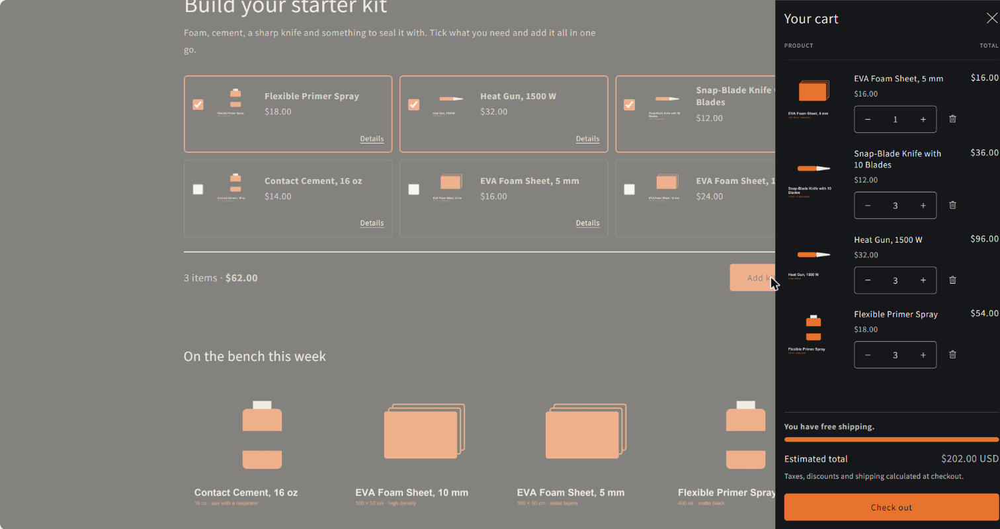

A supply shop for people building foam armour. A first-time builder does not want ten product pages. They want to know what to buy to get started, and to buy it in one go.

Build a kit. Tick what you need; the count and total update as you go; one button adds everything.

The cart opens itself after the kit is added. The bar counts down to free shipping, then says so in words.